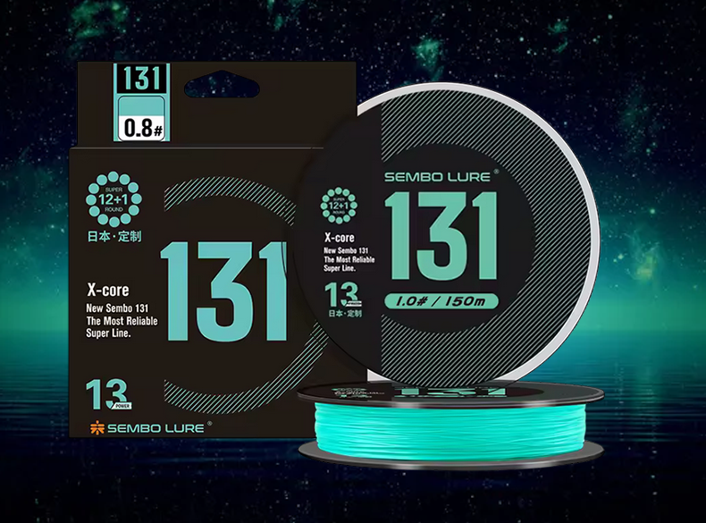
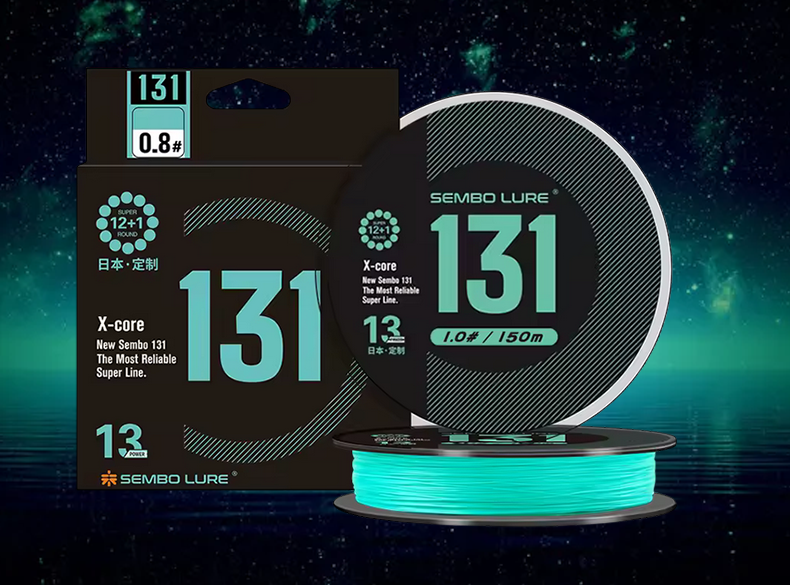

Resumen rápido
ZUKIBO Sembo 13 strands es una línea trenzada avanzada pensada para pescadores exigentes. Dentro de nuestra sección de componentes de pesca, destaca por su construcción de 13 hebras y compite directamente con opciones como la Sougayilang de 9 hebras , ofreciendo un tacto aún más suave y un perfil más redondo.
Características principales
- Construcción: 13 hebras PE de alto módulo
- Diámetro: ultrafino y redondo
- Resistencia: excelente fuerza en nudo y abrasión
- Uso recomendado: spinning, surfcasting y mar, combinada con carretes como el carrete Sougayilang .
Ventajas
- Lanzados más largos y silenciosos.
- Alta sensibilidad y baja elasticidad.
- Gran durabilidad en fondos agresivos.
Desventajas
- Precio algo superior a trenzas de 8 hebras.
- Recomendado usar líder para evitar cortes.
Casos de uso recomendados
- Spinning técnico con señuelos ligeros, usando una caña Phishger King's Return para aprovechar su sensibilidad.
- Pesca en costa y zonas con estructuras rocosas.
Conclusión
La ZUKIBO Sembo 13 hebras es una línea trenzada de alto nivel que ofrece suavidad extrema, resistencia y control total. Si estás comparando sedales avanzados, revisa también la Sougayilang 9 hebras para valorar cuál se adapta mejor a tu estilo.
Valoración Egis Low Cost: ★★★★☆